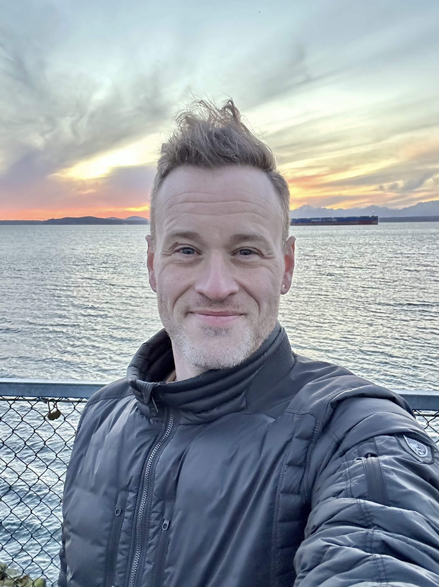

Michael Lawrie

- Expert in transforming massively complex systems and driving principles associated with technical excellence including evolutionary architecture, continuous delivery and developer experience
- Adept navigator of organizational politics, crafter of tech strategies which resonate with the board and dev teams alike
- Dedicated servant leader and mentor who fosters a culture of collaboration and empowered teams
Experience
Executive technical principal
ThoughtWorks
- Directed the technical approach on many client engagements, including:
- Creation and adoption of new loyalty and payments platforms at a Global Fortune 10
- Development of new bidding and ERP systems handling $8B ARR for a global auction conglomerate
- Modernized online ordering for a global fast food brand
- Prior to engagement-level leadership, led multiple software engineering teams, including:
- Development of a major US airline's consumer mobile app serving ~50 million passengers annually
- Frontend replatforming of a Fortune 25 retailer's sole online channel for thousands of physical stores
- Advised clients on using organizational factors to realize desired product and architectural outcomes
- Helped client organizations responsibly adopt modern and evolutionary architectural approaches
- Drove adoption of modern engineering practices like Continuous Delivery and test-driven development in many different organizational contexts
- Played a key role in the evolution of ThoughtWorks' own practices, including development of service offerings and recruiting processes
- Personally mentored more than 50 lead engineers over the past 12 years
Partner, Software engineering
Curriculum Studio
- Founded a software consultancy which doubled in revenue for 3 years consecutively
- Bootstrapped multiple client tech startups, one of which raised 30m in series C, one of which thrives today
Frontend developer
Bitcurve Systems
Researcher, Real-time collaboration tools
Toronto Metropolitan University
Freelance web developer
Self-employed
Highlighted Skills
- evolutionary architecture
- legacy modernization
- data governance
- organizational architecture
- platform architecture
- distributed teams
- developer experience
- product thinking
- iterative design
- mentorship
- risk management
with technical depth in
- java
- javascript
- cloud
- databases
- continuous delivery
- testing
etc.
Education
Bach. Fine Art, New Media, Ryerson University
Coursework towards Bach. Computer Science, University of Toronto